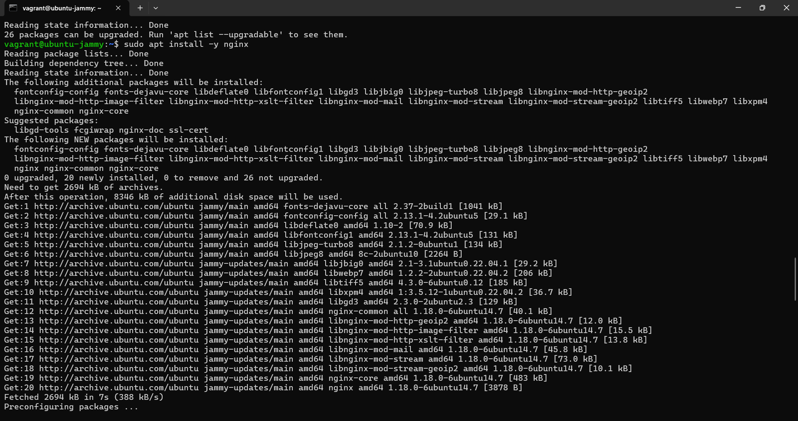
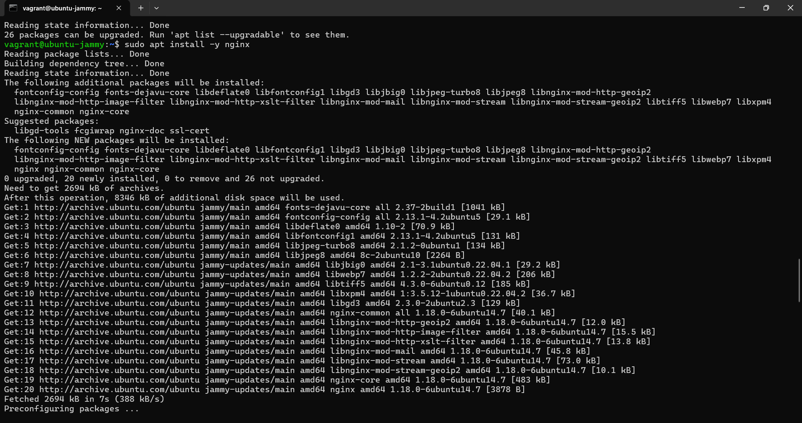

Containerization-DevOps
Name: Rishiraj Singh
SAP ID: 500123612
Batch: B3 (CCVT)
Lab – Experiment 1
Objective
- To understand the conceptual and practical differences between Virtual Machines and Containers.
- To install and configure a Virtual Machine using VirtualBox and Vagrant on Windows.
- To install and configure Containers using Docker inside WSL.
- To deploy an Ubuntu-based Nginx web server in both environments.
- To compare resource utilization, performance, and operational characteristics.
Software and Hardware Requirements
Hardware
- 64-bit system with virtualization enabled
- Minimum 8 GB RAM (4 GB acceptable)
- Internet connection
Software (Windows)
- Oracle VirtualBox
- Vagrant
- WSL 2
- Ubuntu (WSL)
- Docker Engine
Theory
Virtual Machine
A Virtual Machine emulates a complete physical system with its own operating system and runs on a hypervisor.
- Full OS
- High resource usage
- Strong isolation
- Slow startup
Container
Containers virtualize at the OS level and share the host kernel.
- Lightweight
- Fast startup
- Efficient resource usage
Experiment Setup – Part A: Virtual Machine
Verify Vagrant Installation
vagrant --version
Create and Start Virtual Machine
vagrant init ubuntu/jammy64
vagrant up
vagrant ssh
sudo apt install -y nginx
curl localhost


 



Experiment Setup – Part B: Containers
wsl --install
wsl --install -d Ubuntu
sudo apt install docker.io
docker run -d -p 8080:80 nginx
curl localhost:8080
docker pull ubuntu
docker run -d -p 8080:80 --name nginx-container nginx
curl localhost:8080
Resource Utilization Observation
free -h
htop
systemd-analyze
Container Observation Commands
docker stats
free -h
Result
Containers are more lightweight and resource-efficient compared to virtual machines, while virtual machines provide stronger isolation.
Conclusion
Virtual Machines are suitable for full OS isolation, whereas containers are ideal for fast deployment and microservices.
References
- VirtualBox Documentation
- Vagrant Documentation
- Docker Documentation